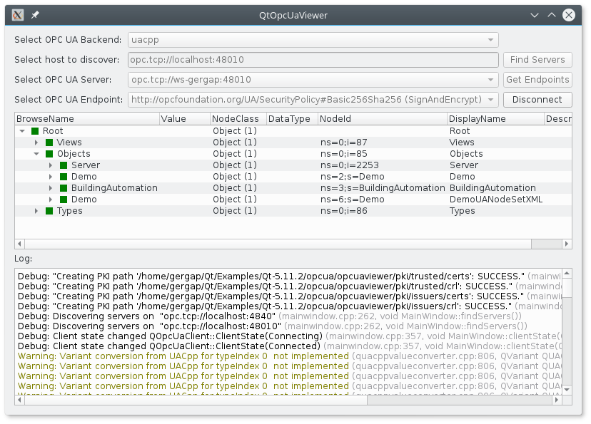
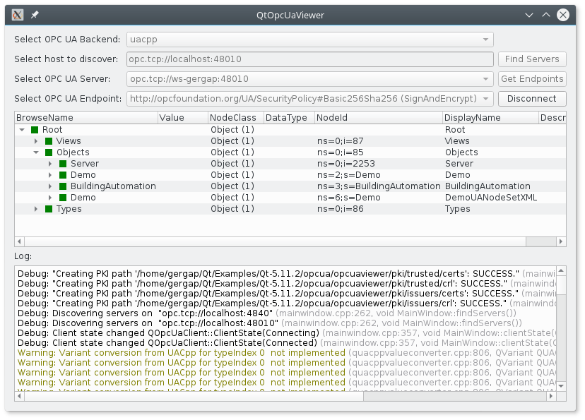

Qt OPC UA Viewer Example
Using the model/view approach to display all nodes of an OPC UA server in a tree view.
Qt OPC UA Viewer uses the model/view approach to display all nodes of an OPC UA server in a QTreeView.

Files:
Using the model/view approach to display all nodes of an OPC UA server in a tree view.
Qt OPC UA Viewer uses the model/view approach to display all nodes of an OPC UA server in a QTreeView.

Files: